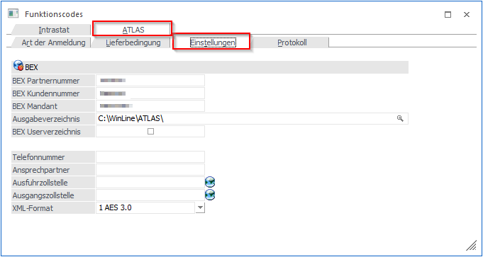

In diesem Register können Daten für die Schnittstelle BEX/AES hinterlegt werden.

Ø BEX Partner- und Kundennummer
Eingabe der BEX Nummern (sollten bekannt sein).
Ø BEX Mandant
Die Angabe des BEX Mandanten, also die mit BEX vereinbarte Mandantenbezeichnung. Um Missverständnisse zu vermeiden, empfiehlt es sich, bei BEX die gleiche Mandantenbezeichnung wie in der WinLine zu verwenden.
Beim ersten Öffnen des Menüpunkts wird der "BEX Mandant" mit der Mandantenbezeichnung der WinLine vorbelegt.
Ø Ausgabeverzeichnis
Als Ausgabeverzeichnis ist jenes anzugeben, in dem die erstellten XML-Dateien abgelegt werden sollen.
Ø BEX Userverzeichnis
Ein Aktivieren der Option "BEX Userverzeichnis" bewirkt, dass das vorherige Feld "Ausgabeverzeichnis" automatisch mit der Angabe "%userprofile%" gefüllt wird. Die XML-Datei, die beim Lieferscheindruck generiert wird, wird dadurch automatisch in einem eigenen userspezifischen Verzeichnis abgestellt. Z. B. unter %userprofile%\Anwendungsdaten\AusfuhrPortal\resource\AES\importDir.
Für den automatischen Upload der aus der WinLine generierten XML-Dateien empfehlen wir die Aktivierung der Option "BEX Userverzeichnis". Dies hat zur Folge, dass das vorherige Feld Ausgabeverzeichnis automatisch mit der Angabe %userprofile% gefüllt wird und dadurch das Programm "BEX Business Components" an jedem Arbeitsplatz installiert werden kann, an dem Lieferscheine mit einem Bestimmungsland außerhalb der EU erstellt und gedruckt werden sollen.
Die XML-Datei, die beim Lieferscheindruck generiert wird, wird damit automatisch in das userspezifische Verzeichnis abgestellt, also unter %userprofile%\Anwendungsdaten\AusfuhrPortal\resource\AES\importDir.
Soll von allen Anwendern ein einheitliches Ausgabeverzeichnis genutzt werden, wird der BEX-Client an nur einem Arbeitsplatz oder Workstation eingerichtet. Im Feld Ausgabeverzeichnis ist nun das Userverzeichnis (%userprofile%\Anwendungsdaten\AusfuhrPortal\resource\AES\importDir) händisch zu erfassen, ohne Aktivierung des Flags "BEX Userverzeichnis". Des Weiteren ist die Freigabe des Ordners notwendig und bei allen Usern als gemapptes Verzeichnis eingetragen.
Beispiel
ü \\UserA_PC\Dokumente und Einstellungen\UserA\Anwendungsdaten\AusfuhrPortal\resource\AES\importDir
Obiges Verzeichnis wird freigegeben und auf allen betroffenen Workstations als Netzlaufwerk damit verbunden (beispielsweise mit Z:\ gemappt). Dieses Netzlaufwerk wird auch als Ausgabeverzeichnis in den Atlas-Stammdaten eingetragen.
Es können dann von unterschiedlichen Workstations Lieferscheine gedruckt werden und die XML-
Dateien werden automatisch in dieses Ausgabeverzeichnis abgestellt. Mit dem Start der Anwendung "BEX Business Components" an der jeweiligen Workstation (z. B. "UserA") werden die im Verzeichnis vorhandenen XML-Dateien automatisch importiert.
Wichtig
Der PC mit dem Userverzeichnis ("UserA") muss zum Zeitpunkt des Lieferschein Drucks eingeschaltet sein, ansonsten kann keine XML-Datei erstellt werden (Meldung im Audit).
Eine andere Möglichkeit
Das Programm "BEX Business Components" auf dem Server installieren und von dort die Meldungen vornehmen. Auch hier gilt: das User-Verzeichnis ist freizugeben und auf allen betroffenen Workstations beispielsweise mit Z:\ zu mappen. Dieses Laufwerk wird als Ausgabeverzeichnis in den ATLAS-Stammdaten eingetragen.
Ø Telefonnummer und Ansprechpartner
Wenn hier Daten eingegeben wurden, werden diese in die XML-Datei übernommen. Diese Angaben sind in der WinLine nicht zwingend erforderlich, da die ID des Anmelders alternativ auch im "BEX Business Components" eingegeben werden kann.
Hinweis
Die restlichen Adressdaten werden aus dem Mandantenstamm übergeben.
Ø Ausfuhrzollstelle
Die Ausfuhrzollstelle ist das zuständige Zollamt des Ortes, an dem die Waren losgeschickt werden. Diese Angabe ist in der WinLine nicht zwingend notwendig, da sie alternativ auch in der Anwendung "BEX Business Components" vorbelegt werden kann.
Ø Ausgangszollstelle
Die Ausgangszollstelle ist die Zollstelle, an der die Waren die EU-Grenze überqueren. Diese Angabe ist in der WinLine nicht zwingend notwendig, da sie alternativ auch in der Anwendung "BEX Business Components" vorbelegt werden kann.
Hinweis
Mit einem Klick auf die Weltkugel-Icons neben den Eingabefeldern "Ausfuhrzollstelle" und "Ausgangszollstelle" können die Zollstellen der "Europäischen Kommission - Generaldirektion Steuern und Zollunion" herausgesucht werden. Die Ausfuhrzollstelle ist das jeweils zuständige Zollamt des Ortes an dem Ihre Waren losgeschickt werden.
Ø XML-Format
Beim Druck eines Ausgangslieferscheins wird entsprechend des eingestellten Wertes eine Datei im jeweiligen Format erzeugt, die anschließend in BEX importiert werden kann. Hier sollte das Format AES 3.0 gewählt werden, wenn im Register "Art der Anmeldung" die aktuellen Funktionscodes geladen wurden und die Felder FC4 in den Belegkopftexten entsprechend angepasst wurden.